Get in Touch
Little Bodhi Montessori Preschool provides a safe joyful and nurturing environment where children develop independence, confidence, creativity and a lifelong love for learning.
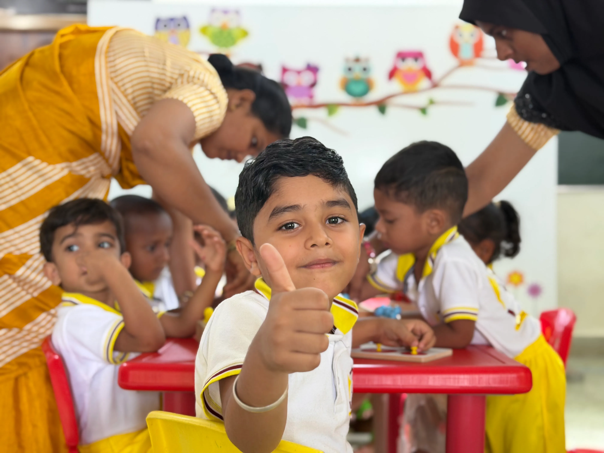
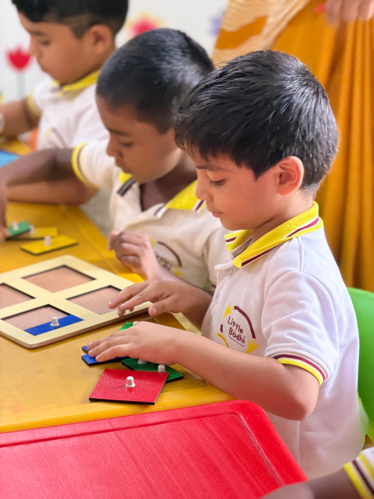
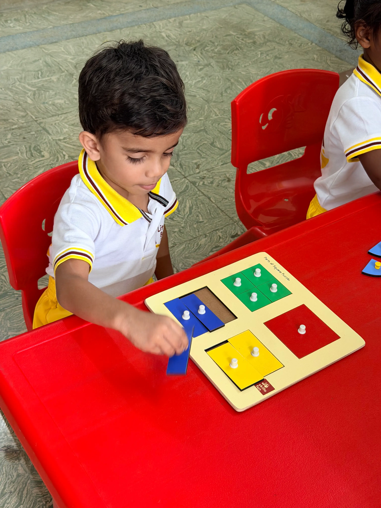
At Little Bodhi, we provide a safe, nurturing, and inspiring environment where every child is encouraged to learn, explore, and grow. Combining the Montessori philosophy with an integrated curriculum, we focus on building confidence, creativity, independence, and a lifelong love for learning through hands-on experiences and personalized attention.
Activities that foster independence and help children learn everyday skills.
Refining the senses to help children understand the world around them.
Building strong communication and early reading and writing skills.
Encouraging problem-solving and critical thinking through hands-on play.
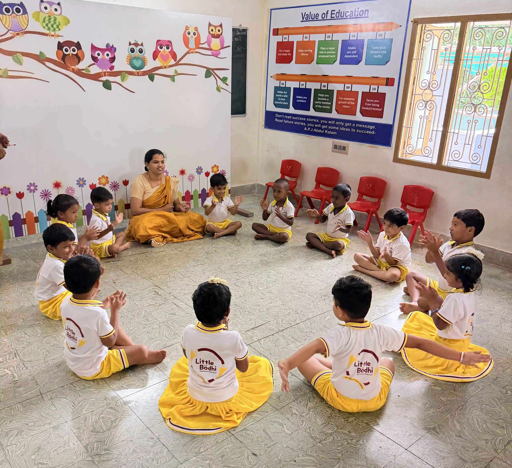
Greetings, songs, calendar activities, and discussions to build communication skills.
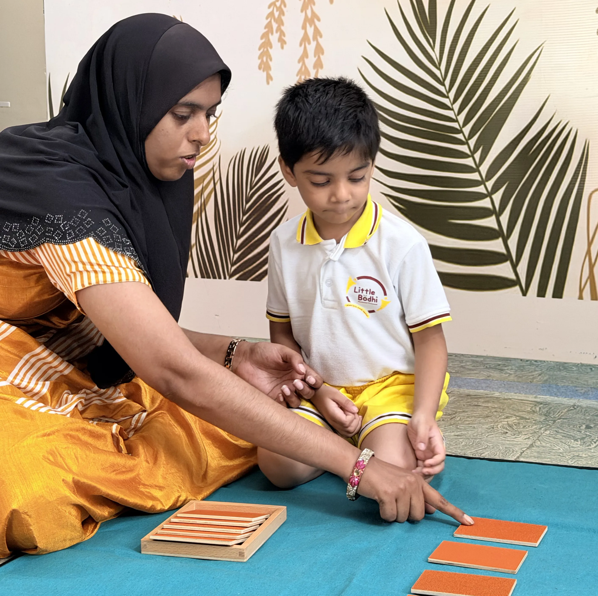
Hands-on learning activities that develop independence, concentration, and problem-solving skills.
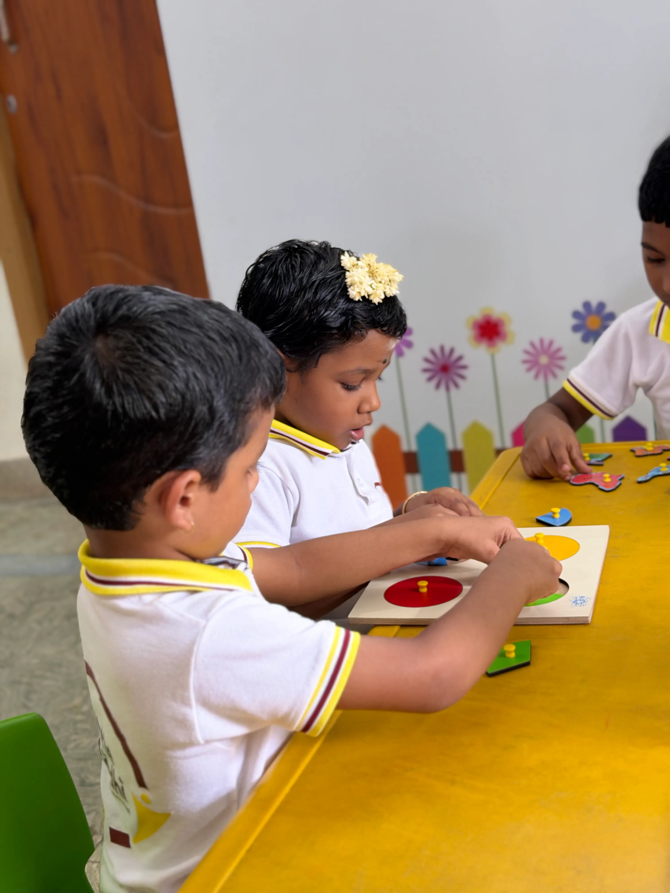
Art, craft, colouring, and sensory activities to encourage imagination and creativity.
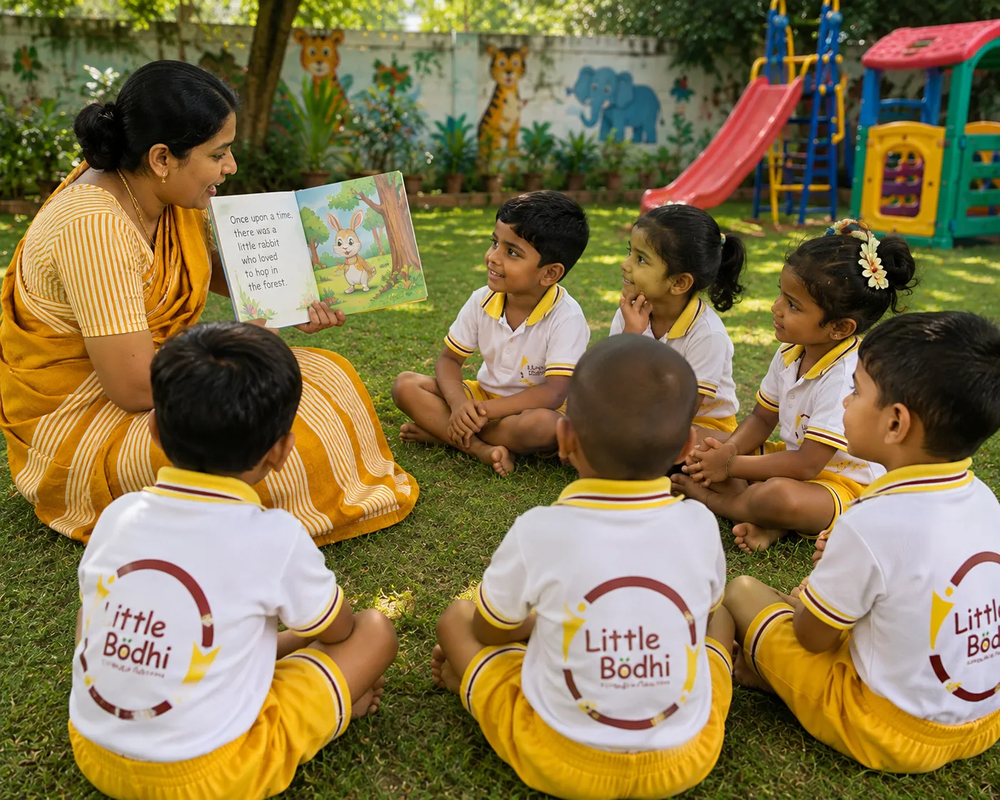
Phonics, rhymes, storytelling, and vocabulary-building activities.
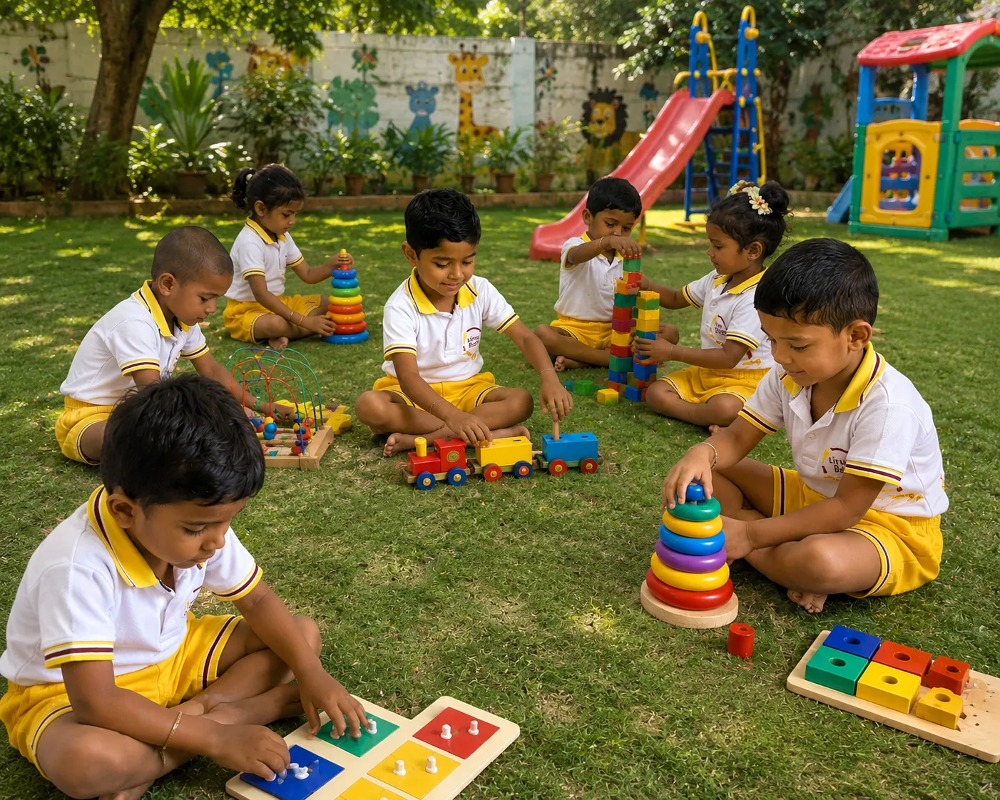
Gross motor activities, games, and exercises to improve coordination and physical development.
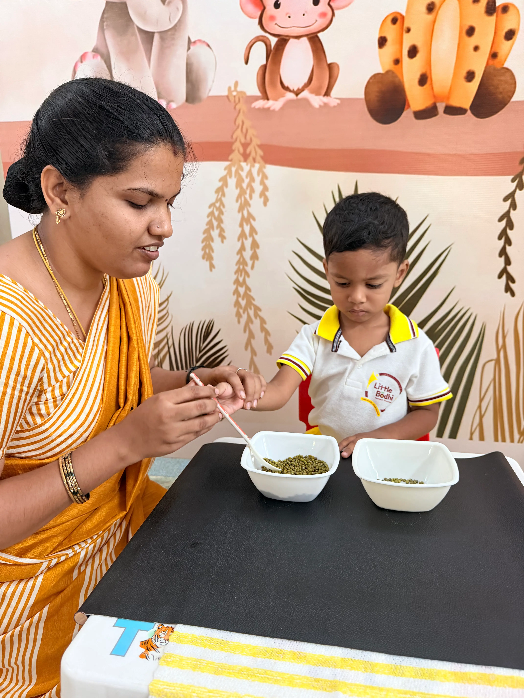
Practical life activities, sharing, gratitude, and social-emotional learning to build confidence and good values.
A Preschool Readiness Program that nurtures independence, confidence, and early learning skills through hands-on Montessori experiences and practical life activities.
EnquireA foundation program that develops language, social, and sensory skills through joyful and engaging Montessori learning.
A comprehensive program that strengthens early literacy, numeracy, and independent learning through hands-on experiences.
A school readiness program that prepares children for primary education by building confidence, creativity, and essential academic skills.
Building imagination, communication, and social skills through engaging stories.
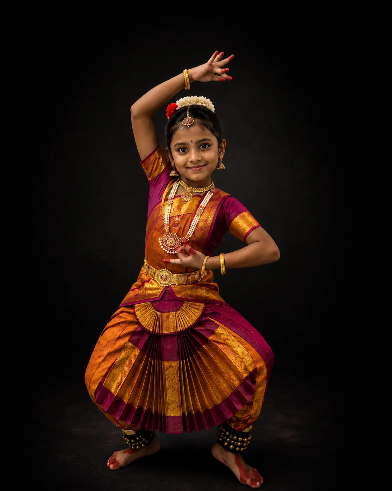
Enhancing grace, rhythm, confidence, and cultural appreciation.
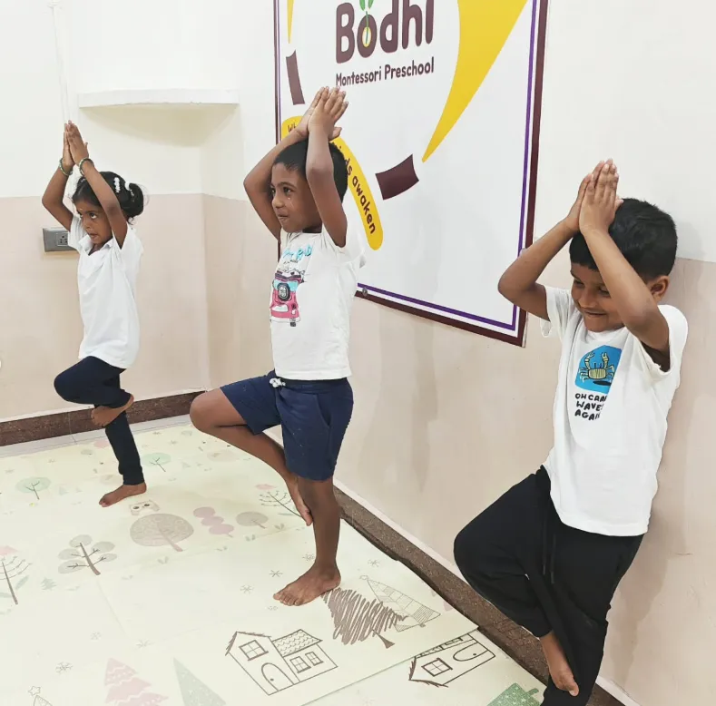
Improving flexibility, focus, balance, and overall well-being.
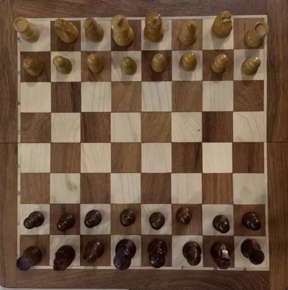
Developing logical thinking, concentration, and strategic decision-making.
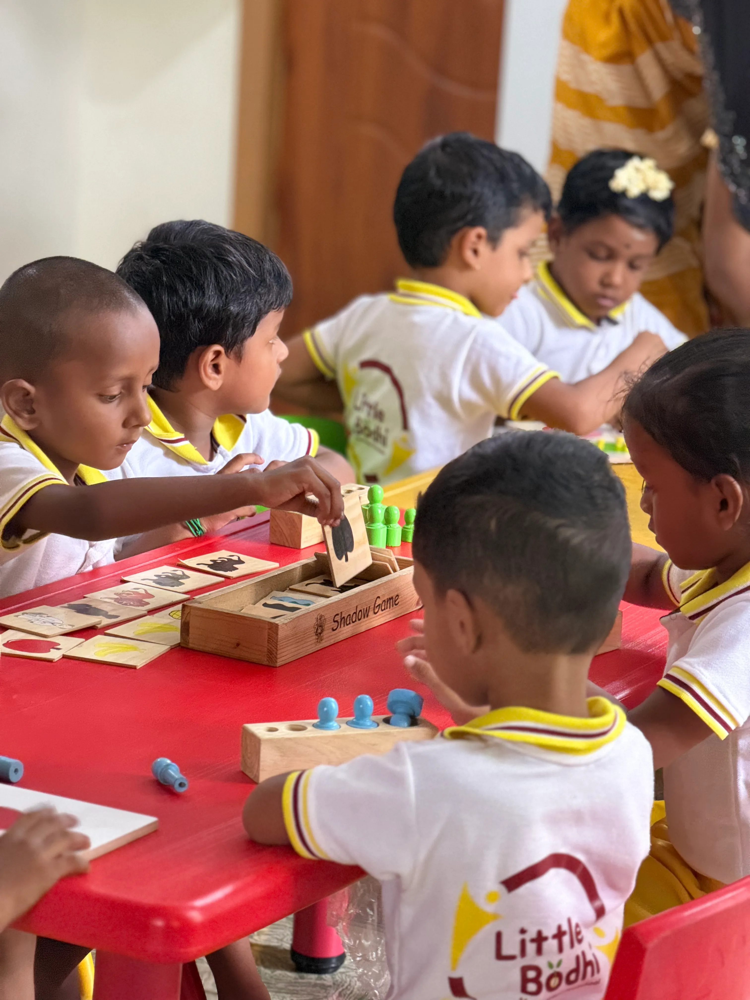
"We really appreciate the Montessori approach at Little Bodhi. Our child has become more confident and independent with everyday activities. It would be wonderful to have more opportunities for children to explore and choose activities based on their individual interests."
"Little Bodhi has created a very warm and caring environment for children. The teachers are patient and attentive, and we can clearly see the positive changes in our child. We would love to see even more outdoor and nature-based activities in the coming days."
"What we like most is that children learn through activities rather than just books. Our child enjoys coming to school and talks about the activities at home. We feel that more regular parent-teacher updates about our child’s progress would make the experience even better"
"The teachers are very caring and take time to understand each child. We have noticed improvement in our child’s communication and confidence. We would appreciate more opportunities for parents to understand and experience the Montessori activities used in the classroom"
Little Bodhi Montessori Preschool welcomes children from 2 to 6 years. Our programs are thoughtfully designed according to the child’s age, developmental stage, and individual learning needs.
Montessori education is a child-centred approach that encourages children to learn through hands-on experiences, exploration, observation, and purposeful activities. Children are given opportunities to develop independence, concentration, coordination, confidence, and a love for learning.
At Little Bodhi, we focus not only on academic learning but also on the child’s overall development. Children learn through practical life activities, sensorial experiences, language, mathematics, creative activities, movement, and meaningful real-life experiences.
For admission enquiries, program details, fees, availability, and school visits, please contact the Little Bodhi Montessori Preschool admissions team. We will be happy to guide you through the process.
The Montessori approach is a child-centred method of learning where children learn through hands-on activities, exploration, observation, and purposeful experiences. At Little Bodhi, children are encouraged to learn at their own pace while developing independence, concentration, coordination, confidence, and a natural love for learning.